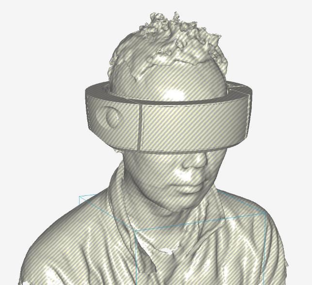

Business Designer & Design Consultant
Design
as a tool
for change.
何かを変えるべきだが、それが何かわからない。
こんな相談から一緒に課題やニーズを見つけて、解決策を見出してきた。
News
26年度から多摩美術大学にて
UI/UXについての
非常勤講師を開始
UI/UXについての
非常勤講師を開始
Today
01
Selected Work
デザイナーとして現場から、事業と文化をつくってきた。
デザイナーとして商品企画・事業企画に携わって感じたのは、デザインでは最初に考えるべき「ユーザー」がほとんど不在で、スペックと予算と工数の話しか登場しないということ。
その違和感を出発点に、新規事業を検討する部署へ異動し、「なぜそうなっているのか」を中から探り、ユーザー中心の検討プロセスに変えていくことを自らのミッションとした。
答えを渡すのではなく、正しい問いを一緒に立てることから始める。
| 01 | 新規事業・DX検討を Advisory としてリード 大企業の経営層と並走し、複数部門を横断して経営・事業・技術をつなぐ。事業の「問い」の設定からビジネスモデル検証・プロトタイピングまでを支援。 | 2022–Now | ↗ | |
| 02 | AIと、つくる速さ 生成AIで試作が速くなると、考え方は変わるのか。平安京の3D再現、ペットが手紙を運ぶメッセンジャー、9つの占術を重ねる羅占盤——仕事とは別に、思いついたものを作って確かめている。 | 2025–Now | ↗ | |
| 03 | iPod連携 車載UXデザイン開発 当時最先端の機能を車載機のUXに落とし込むデザイン開発をリード。グローバルパートナーとの協業でプロダクトを実現。 | 1999–2008 | ↗ | |
| 04 | エンタープライズUX設計 現場調査から要件定義・画面設計・マニュアル制作まで。4名のデザイナーをディレクションし、複数の業務プロダクトを設計・開発した。 | 2010–2019 | ↗ | |
| 05 | 生産現場の課題解決 PoC → 外販展開 製造現場へのエスノグラフィー調査から課題を特定。社内PoCで検証後、外販ビジネスへと拡大するモデルを構築。 | 2014–2019 | ↗ | |
| 06 | 社内起業制度で、挑戦する文化をトップダウンでつくる 「社員の自発性が弱い」と言う経営層に「止めているのは現場の部課長です」と返して生まれた、社長直轄の制度。初年度120件超の応募、うち1件は数億円規模へ。反対していた部課長が、3年目には応援する側に変わった。 | 2019–2022 | ↗ | |
| 07 | 企業内FABスペースで、挑戦する文化をボトムアップでつくる 3Dプリンタとレーザーカッターを置いたら、仕事では見せない顔で没頭する社員が集まってきた。ここで新規事業の相談を受け続けた経験が、TRIBUSの土台になった。NHK 魔改造の夜への出場チームも率いた。 | 2014–2019 | ↗ | |
| 08 | ユーザーは、本当のことを言えない 本人にとっては普通のことなので、それが課題だとは思っていない。工場・車の中・会社・教室で繰り返し出会った、観察が「聞く」を超える瞬間。 | 1999–Now | ↗ |
02
About

Inouchi Ikuo
Business Designer & Design Consultant
多摩美術大学 統合デザイン科 非常勤講師
多摩美術大学 統合デザイン科 非常勤講師
デザイナーとして約30年、プロダクトから事業・組織まで一貫して現場に携わってきた。現在は外資系クラウド大手でDXアドバイザリーに従事しながら、多摩美術大学でUI/UXを教える。
「答え」を持ち込むよりも、「本当に解くべき問い」を一緒に立てることに価値がある。デザインと経営の言語を使い分けながら、現場と経営層を同じ方向に動かす。
- Focus
- 新規事業創出 · DX支援 · UI/UXデザイン
- Certification
- AWS Certified AI Practitioner
- Language
- Japanese · English
03
Career
1997
プロダクトデザイナー
デザイン会社
精密機器から玩具、カタログ、Webのデザインまで
1999
UIデザイナー → デザイン部課長
車載機器メーカー
ユーザーにどう使ってほしいか、どう使われるかに向き合う
2008
UI/UXデザイン → 新規事業開発 → 社内起業プログラムリード
精密機器メーカー
現場での課題発見から事業化までをUXの立場で実践し、社内に展開
2022–
Now
Now
DX Advisory / Design Architect
外資系クラウド大手
コンサルタントの立場から企業のDX、事業企画、文化醸成に参画
非常勤講師
多摩美術大学 統合デザイン科